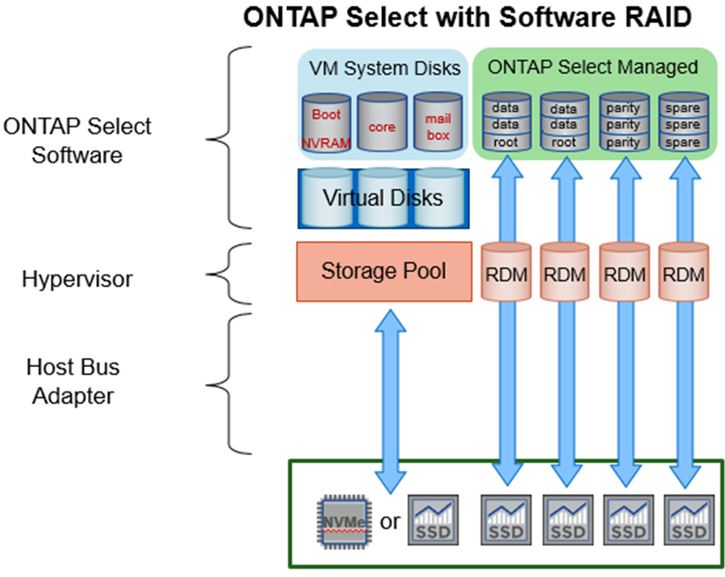
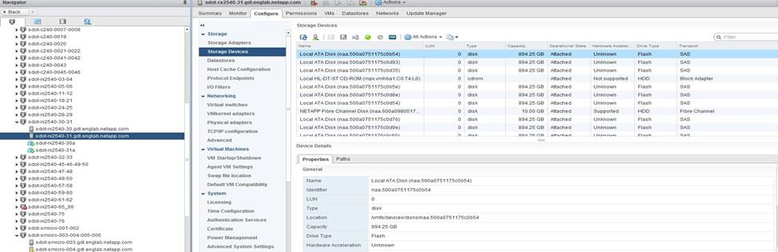

发行说明
发行说明
用于本地连接存储的软件 RAID 服务
 建议更改
建议更改
软件 RAID 是在 ONTAP 软件堆栈中实施的 RAID 抽象层。它提供的功能与 FAS 等传统 ONTAP 平台中的 RAID 层相同。RAID 层执行驱动器奇偶校验计算，并针对 ONTAP Select 节点中的各个驱动器故障提供保护。
ONTAP Select 还提供了一个软件 RAID 选项，与硬件 RAID 配置无关。在某些环境中，硬件 RAID 控制器可能不可用或不受欢迎，例如在小型商用硬件上部署 ONTAP Select 时。软件 RAID 扩展了可用的部署选项，以包括此类环境。要在您的环境中启用软件 RAID ，请记住以下几点：
-
它随 Premium 或 Premium XL 许可证一起提供。
-
它仅支持 SSD 或 NVMe （需要高级 XL 许可证）驱动器用于 ONTAP 根磁盘和数据磁盘。
-
ONTAP Select VM 启动分区需要一个单独的系统磁盘。
-
选择一个单独的磁盘，即 SSD 或 NVMe 驱动器，以便为系统磁盘（在多节点设置中为 NVRAM ，启动 /CF 卡，核心转储和调解器）创建数据存储库。
-
-
注释 *
-
术语服务磁盘和系统磁盘可互换使用。
-
服务磁盘是指在 ONTAP Select VM 中用于为集群，启动等各种项目提供服务的 VMDK 。
-
服务磁盘实际位于一个物理磁盘上（统称为服务 / 系统物理磁盘），就像主机中显示的那样。该物理磁盘必须包含 DAS 数据存储库。ONTAP Deploy 会在集群部署期间为 ONTAP Select VM 创建这些服务磁盘。
-
-
无法在多个数据存储库之间或多个物理驱动器之间进一步分隔 ONTAP Select 系统磁盘。
-
硬件 RAID 未弃用。
本地连接存储的软件 RAID 配置
使用软件 RAID 时，最好不要使用硬件 RAID 控制器，但是，如果系统确实具有现有 RAID 控制器，则必须满足以下要求：
-
必须禁用硬件 RAID 控制器，以便可以将磁盘直接提供给系统（ JBOD ）。此更改通常可在 RAID 控制器 BIOS 中进行
-
或者，硬件 RAID 控制器应处于 SAS HBA 模式。例如，除了 RAID 之外，某些 BIOS 配置还允许使用 "AHCI" 模式，可以选择此模式来启用 JBOD 模式。这样可以启用直通，以便可以将物理驱动器视为主机上的物理驱动器。
根据控制器支持的最大驱动器数，可能需要额外的控制器。在 SAS HBA 模式下，确保 IO 控制器（ SAS HBA ）至少支持 6 Gb/ 秒的速度。但是， NetApp 建议使用 12 Gbps 的速度。
不支持其他硬件 RAID 控制器模式或配置。例如，某些控制器允许 RAID 0 支持，这种支持可能会人为地使磁盘实现直通，但其影响可能不受欢迎。支持的物理磁盘大小（仅限 SSD ）介于 200 GB 到 16 TB 之间。

|
管理员需要跟踪 ONTAP Select VM 正在使用哪些驱动器，并防止在主机上无意中使用这些驱动器。 |
ONTAP Select 虚拟和物理磁盘
对于使用硬件 RAID 控制器的配置，物理磁盘冗余由 RAID 控制器提供。ONTAP Select 会显示一个或多个 VMDK ， ONTAP 管理员可以从中配置数据聚合。这些 VMDK 采用 RAID 0 格式进行条带化，因为使用 ONTAP 软件 RAID 会因硬件级别提供的故障恢复能力而变得冗余，效率低下且效率低下。此外，用于系统磁盘的 VMDK 与用于存储用户数据的 VMDK 位于同一个数据存储库中。
使用软件 RAID 时， ONTAP Deploy 会为 ONTAP Select 提供一组虚拟磁盘（ VMDK ）和物理磁盘原始设备映射（ RDM ），用于 SSD ，并为 NVMes 提供直通或 DirectPath IO 设备。
下图更详细地显示了这种关系，突出显示了用于 ONTAP Select VM 内部的虚拟化磁盘与用于存储用户数据的物理磁盘之间的区别。
-
ONTAP Select 软件 RAID ：使用虚拟化磁盘和 RDM *

系统磁盘（ VMDK ）位于同一个数据存储库中，并且位于同一个物理磁盘上。虚拟 NVRAM 磁盘需要一个快速且持久的介质。因此，仅支持 NVMe 和 SSD 类型的数据存储库。

系统磁盘（ VMDK ）位于同一个数据存储库中，并且位于同一个物理磁盘上。虚拟 NVRAM 磁盘需要一个快速且持久的介质。因此，仅支持 NVMe 和 SSD 类型的数据存储库。在使用 NVMe 驱动器存储数据时，出于性能原因，系统磁盘也应是 NVMe 设备。在全 NVMe 配置中，最好使用 Intel Optane 卡作为系统磁盘。
|
|
在当前版本中，无法在多个数据存储库或多个物理驱动器之间进一步分隔 ONTAP Select 系统磁盘。 |
每个数据磁盘分为三部分：一个小根分区（条带）和两个大小相等的分区，用于创建 ONTAP Select VM 中可以看到的两个数据磁盘。对于单节点集群和 HA 对中的节点，分区使用根数据数据（ RD2 ）模式，如下图所示。
P 表示奇偶校验驱动器。 DP 表示双奇偶校验驱动器和 S 表示备用驱动器。
-
用于单节点集群的 RDD 磁盘分区 *

-
多节点集群（ HA 对）的 RDD 磁盘分区 *

ONTAP 软件 RAID 支持以下 RAID 类型： RAID 4 ， RAID-DP 和 RAID-TEC 。这些 RAID 构造与 FAS 和 AFF 平台使用的 RAID 构造相同。对于根配置， ONTAP Select 仅支持 RAID 4 和 RAID-DP 。对数据聚合使用 RAID-TEC 时，整体保护为 RAID-DP 。ONTAP Select HA 使用无共享架构将每个节点的配置复制到另一节点。这意味着每个节点都必须存储其根分区及其对等方根分区的副本。由于数据磁盘具有一个根分区，因此数据磁盘的最小数量将因 ONTAP Select 节点是否属于 HA 对而异。
对于单节点集群，所有数据分区都用于存储本地（活动）数据。对于属于 HA 对的节点，一个数据分区用于存储该节点的本地（活动）数据，另一个数据分区用于镜像来自 HA 对等方的活动数据。
直通（ DirectPath IO ）设备与原始设备映射（ RDM ）
VMware ESX 当前不支持将 NVMe 磁盘作为原始设备映射。要使 ONTAP Select 直接控制 NVMe 磁盘，必须在 ESX 中将 NVMe 驱动器配置为直通设备。请注意，将 NVMe 设备配置为直通设备需要服务器 BIOS 的支持，这是一个中断过程，需要重新启动 ESX 主机。此外，每个 ESX 主机的最大直通设备数为 16 。但是， ONTAP Deploy 将此限制为 14 。每个 ONTAP Select 节点最多 14 个 NVMe 设备这一限制意味着，全 NVMe 配置将提供极高的 IOPS 密度（ IOPS/TB ），但会影响总容量。或者，如果需要具有更大存储容量的高性能配置，建议的配置为：较大的 ONTAP Select VM 大小，系统磁盘的 Intel Optane 卡以及用于数据存储的 SSD 驱动器的标称数量。
|
|
要充分利用 NVMe 性能，请考虑较大的 ONTAP Select VM 大小。 |
直通设备和 RDM 之间还有其他区别。RDM 可以映射到正在运行的虚拟机。直通设备需要重新启动 VM 。这意味着，任何 NVMe 驱动器更换或容量扩展（驱动器添加）操作步骤 都需要重新启动 ONTAP Select VM 。驱动器更换和容量扩展（驱动器添加）操作由 ONTAP Deploy 中的工作流决定。ONTAP Deploy 可管理单节点集群的 ONTAP Select 重新启动以及 HA 对的故障转移 / 故障恢复。但是，请务必注意使用 SSD 数据驱动器（无需 ONTAP Select 重新启动 / 故障转移）与使用 NVMe 数据驱动器（需要 ONTAP Select 重新启动 / 故障转移）之间的区别。
物理和虚拟磁盘配置
为了提供更加简化的用户体验， ONTAP Deploy 会自动从指定的数据存储库（物理系统磁盘）配置系统（虚拟）磁盘，并将其连接到 ONTAP Select VM 。此操作会在初始设置期间自动执行，以便 ONTAP Select VM 可以启动。RDM 将进行分区，并自动构建根聚合。如果 ONTAP Select 节点属于 HA 对，则数据分区会自动分配给本地存储池和镜像存储池。此分配会在集群创建操作和存储添加操作期间自动进行。
由于 ONTAP Select VM 上的数据磁盘与底层物理磁盘相关联，因此使用更多物理磁盘创建配置会对性能产生影响。
|
|
根聚合的 RAID 组类型取决于可用磁盘的数量。ONTAP Deploy 会选择适当的 RAID 组类型。如果为节点分配了足够的磁盘，则会使用 RAID-DP ，否则会创建 RAID-4 根聚合。 |
在使用软件 RAID 向 ONTAP Select VM 添加容量时，管理员必须考虑物理驱动器大小和所需的驱动器数量。有关详细信息，请参见一节 "增加存储容量"。
与 FAS 和 AFF 系统类似，只能向现有 RAID 组添加容量相等或更大的驱动器。容量较大的驱动器的大小合适。如果要创建新的 RAID 组，则新的 RAID 组大小应与现有 RAID 组大小匹配，以确保整体聚合性能不会下降。
将ONTAP Select磁盘与对应的ESX磁盘进行匹配
ONTAP Select 磁盘通常标记为 NET x.y 。您可以使用以下 ONTAP 命令获取磁盘 UUID ：
<system name>::> disk show NET-1.1 Disk: NET-1.1 Model: Micron_5100_MTFD Serial Number: 1723175C0B5E UID: *500A0751:175C0B5E*:00000000:00000000:00000000:00000000:00000000:00000000:00000000:00000000 BPS: 512 Physical Size: 894.3GB Position: shared Checksum Compatibility: advanced_zoned Aggregate: - Plex: -This UID can be matched with the device UID displayed in the ‘storage devices’ tab for the ESX host

在 ESXi Shell 中，您可以输入以下命令，使给定物理磁盘（通过 na.unique-id 标识）的 LED 闪烁。
esxcli storage core device set -d <naa_id> -l=locator -L=<seconds>
使用软件 RAID 时出现多个驱动器故障
系统可能会遇到多个驱动器同时处于故障状态的情况。系统的行为取决于聚合 RAID 保护和故障驱动器的数量。
RAID4 聚合可以承受一个磁盘故障， RAID-DP 聚合可以承受两个磁盘故障，而 RAID-TEC 聚合可以承受三个磁盘故障。
如果故障磁盘数小于 RAID 类型支持的最大故障数，并且备用磁盘可用，则重建过程将自动开始。如果备用磁盘不可用，则聚合将在降级状态下提供数据，直到添加备用磁盘为止。
如果故障磁盘数超过 RAID 类型支持的最大故障数，则本地丛将标记为故障，并且聚合状态为降级。数据由 HA 配对节点上的第二个丛提供。这意味着，节点 1 的任何 I/O 请求都会通过集群互连端口 e0e （ iSCSI ）发送到物理上位于节点 2 上的磁盘。如果第二个丛也发生故障，则聚合将标记为发生故障，并且数据不可用。
必须删除并重新创建故障丛，才能恢复正确的数据镜像。请注意，如果多磁盘故障导致数据聚合降级，则根聚合也会降级。ONTAP Select 使用根 - 数据 - 数据（ RDD ）分区方案将每个物理驱动器拆分为一个根分区和两个数据分区。因此，丢失一个或多个磁盘可能会影响多个聚合，包括本地根聚合或远程根聚合的副本，以及本地数据聚合和远程数据聚合的副本。
C3111E67::> storage aggregate plex delete -aggregate aggr1 -plex plex1
Warning: Deleting plex "plex1" of mirrored aggregate "aggr1" in a non-shared HA configuration will disable its synchronous mirror protection and disable
negotiated takeover of node "sti-rx2540-335a" when aggregate "aggr1" is online.
Do you want to continue? {y|n}: y
[Job 78] Job succeeded: DONE
C3111E67::> storage aggregate mirror -aggregate aggr1
Info: Disks would be added to aggregate "aggr1" on node "sti-rx2540-335a" in the following manner:
Second Plex
RAID Group rg0, 5 disks (advanced_zoned checksum, raid_dp)
Usable Physical
Position Disk Type Size Size
---------- ------------------------- ---------- -------- --------
shared NET-3.2 SSD - -
shared NET-3.3 SSD - -
shared NET-3.4 SSD 208.4GB 208.4GB
shared NET-3.5 SSD 208.4GB 208.4GB
shared NET-3.12 SSD 208.4GB 208.4GB
Aggregate capacity available for volume use would be 526.1GB.
625.2GB would be used from capacity license.
Do you want to continue? {y|n}: y
C3111E67::> storage aggregate show-status -aggregate aggr1
Owner Node: sti-rx2540-335a
Aggregate: aggr1 (online, raid_dp, mirrored) (advanced_zoned checksums)
Plex: /aggr1/plex0 (online, normal, active, pool0)
RAID Group /aggr1/plex0/rg0 (normal, advanced_zoned checksums)
Usable Physical
Position Disk Pool Type RPM Size Size Status
-------- --------------------------- ---- ----- ------ -------- -------- ----------
shared NET-1.1 0 SSD - 205.1GB 447.1GB (normal)
shared NET-1.2 0 SSD - 205.1GB 447.1GB (normal)
shared NET-1.3 0 SSD - 205.1GB 447.1GB (normal)
shared NET-1.10 0 SSD - 205.1GB 447.1GB (normal)
shared NET-1.11 0 SSD - 205.1GB 447.1GB (normal)
Plex: /aggr1/plex3 (online, normal, active, pool1)
RAID Group /aggr1/plex3/rg0 (normal, advanced_zoned checksums)
Usable Physical
Position Disk Pool Type RPM Size Size Status
-------- --------------------------- ---- ----- ------ -------- -------- ----------
shared NET-3.2 1 SSD - 205.1GB 447.1GB (normal)
shared NET-3.3 1 SSD - 205.1GB 447.1GB (normal)
shared NET-3.4 1 SSD - 205.1GB 447.1GB (normal)
shared NET-3.5 1 SSD - 205.1GB 447.1GB (normal)
shared NET-3.12 1 SSD - 205.1GB 447.1GB (normal)
10 entries were displayed..
|
|
要测试或模拟一个或多个驱动器故障、请使用 storage disk fail -disk NET-x.y -immediate 命令：如果系统中有备用磁盘，聚合将开始重建。您可以使用命令检查重建状态 storage aggregate show。您可以使用 ONTAP Deploy 删除模拟故障驱动器。请注意、ONTAP已将驱动器标记为 Broken。驱动器实际上未损坏，可以使用 ONTAP Deploy 重新添加。要擦除损坏的标签，请在 ONTAP Select 命令行界面中输入以下命令：
|
set advanced disk unfail -disk NET-x.y -spare true disk show -broken
最后一个命令的输出应为空。
虚拟化 NVRAM
NetApp FAS 系统通常配备物理 NVRAM PCI 卡。此卡是一种高性能卡，包含非易失性闪存，可显著提升写入性能。为此，它授予 ONTAP 立即确认传入的写入客户端的能力。此外，它还可以计划在一个称为转存的过程中将修改后的数据块移回速度较慢的存储介质。
商用系统通常不安装此类设备。因此， NVRAM 卡的功能已虚拟化并置于 ONTAP Select 系统启动磁盘上的分区中。因此，放置实例的系统虚拟磁盘极为重要。